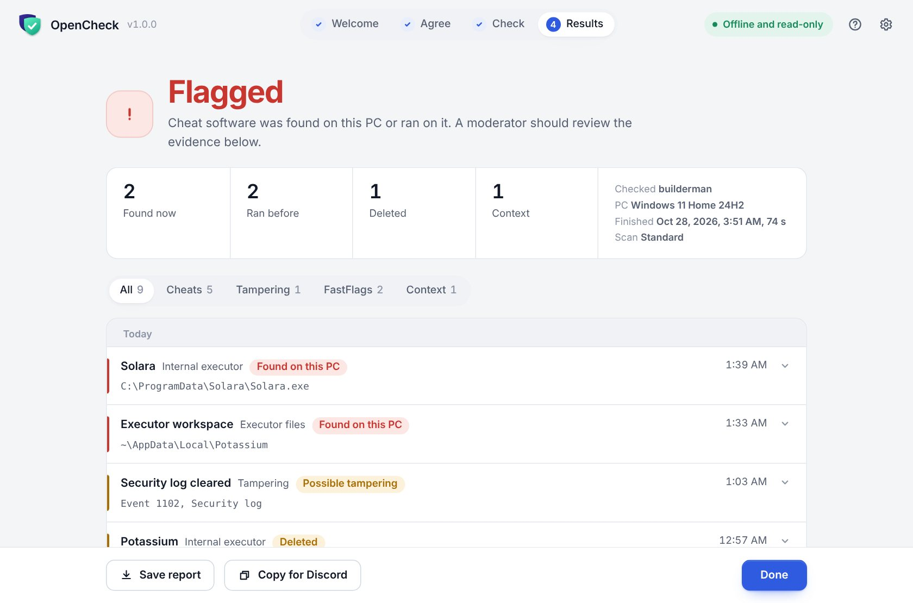
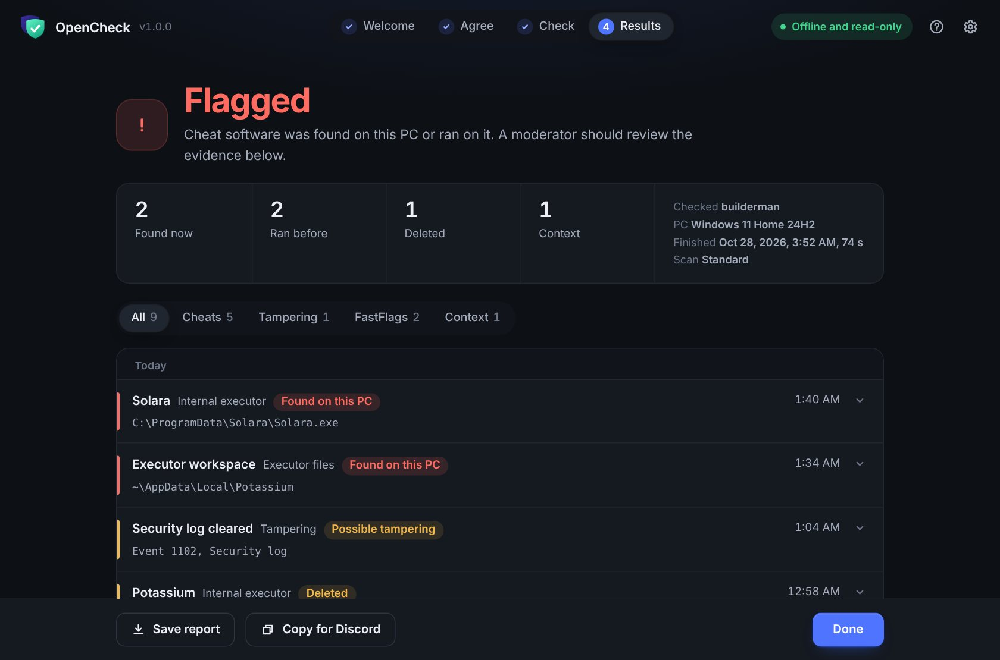
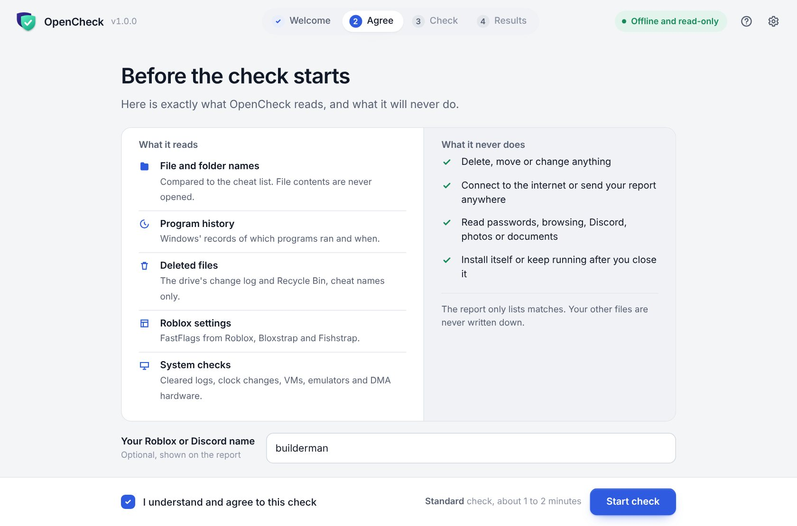
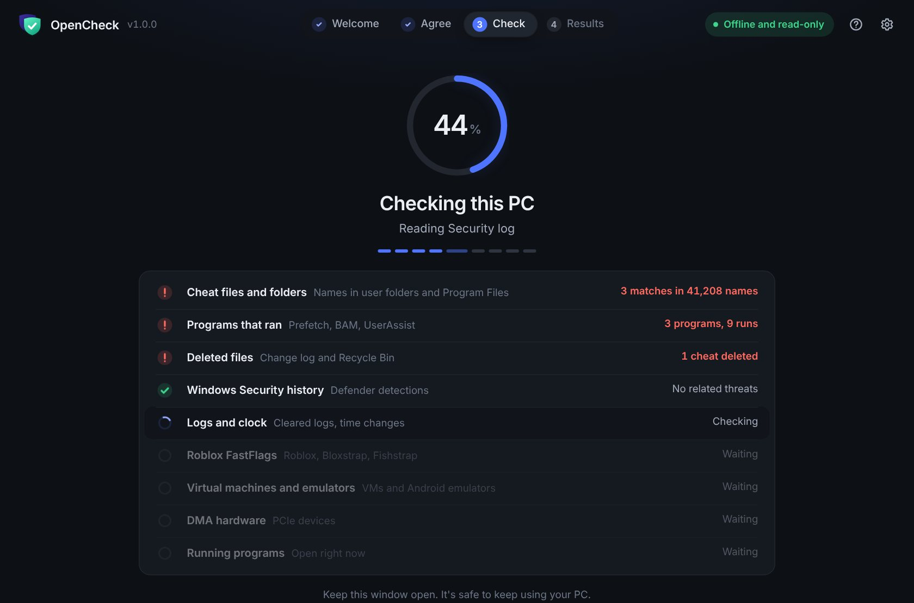

The PC check players can actually trust.
OpenCheck finds Roblox executors, externals, unfair FastFlags, macros and lag switches, even ones that were deleted. It only reads, never connects to the internet, and every line of code is public.


Built so nobody has to take our word for it.
Fake "PC checkers" that steal accounts are everywhere. OpenCheck is designed to be the opposite, and every promise below is checked automatically on every build.
Read-only
It only looks. It never deletes, moves or changes a single file or setting on your PC.
Works offline
There is no internet code in the app. Your report only leaves your PC if you copy or save it yourself.
Private
No passwords, browsing, Discord, photos or documents. It compares file names to a cheat list, and your Windows name is hidden.
Open source
Every line is public on GitHub. Anyone can read exactly what it does before running it.
Safety tested
Automated tests read the app's own code. Anything that could delete, change or upload fails the build.
Verifiable
GitHub builds every release from the public code and signs proof of it. Each report shows the app's fingerprint.
It finds cheats even after they're deleted.
Windows keeps records of programs that ran and files that were removed. OpenCheck reads those records and lines everything up on one timeline.
- 1Executors and externalsSolara, Wave, Xeno, Potassium, Volcano, Matcha, Severe and dozens more, plus patterns that catch renamed ones.
- 2Program historyPrefetch, BAM, UserAssist and more, with run counts and times.
- 3Deleted and renamed filesThe drive's change log and the Recycle Bin, cheat names only.
- 4FastFlagsUnfair flags in Roblox and every bootstrapper, FastFlag tools and downloaded flag lists.
- 5Macros and lag switchesAuto clickers, AutoHotkey, Clumsy, NetLimiter and firewall rules that cut Roblox's connection.
- 6Covered tracksCleared logs, wiped Prefetch, a reset change log, clock changes and a PC reset right before the check.
- 7Antivirus historyWhat Windows Security caught, and folders hidden from it.
- 8VMs, emulators and DMAWhether it's running in a virtual machine, Android emulators, and DMA-style PCIe hardware.
About two minutes, start to finish.
- Download from the official pageGet OpenCheck.zip from the GitHub Releases page and unzip it.
- Run OpenCheck.exeClick Yes for admin. It needs admin only to read Windows' history and logs.
- Read and agreeThe app shows exactly what it reads and what it never does before it starts.
- Share the reportPress Copy for Discord or Save report. You see everything first.
Seeing "Windows protected your PC"? That shows for new apps that aren't code-signed yet. Click More info, then Run anyway.


Clear verdicts, with the evidence behind them.
A match is evidence, not proof. OpenCheck shows where every finding came from so your team makes the call.
A cheat was found, ran, was deleted, or is hidden from antivirus.
No cheat names, but signs worth asking about: cleared logs, a fresh reset, a VM, macros, unfair FastFlags.
Nothing matched. Strong evidence, not a guarantee.
Make sure they ran the real app
Every report starts with the app's SHA-256 fingerprint. It must match the one on the release page. You can also check GitHub's build proof yourself:
gh attestation verify OpenCheck.zip --repo OpenCheck-app/OpenCheckQuestions people ask first.
Is it a virus?
No. It's open source, scored 0 out of 70 on VirusTotal, and every release is built by GitHub straight from the public code. You can read every line before running it.
Why does it need admin?
Windows only lets admins read Prefetch, the drive's change log and the Security event log. OpenCheck reads them and changes nothing.
Does it send my files anywhere?
No. The app has no internet code at all. The report only leaves your PC if you press Copy or Save and share it yourself.
Will Bloxstrap or Fishstrap get me flagged?
No. Bootstrappers are normal Roblox launchers. They're listed as context only and never count against anyone.
Can it catch every cheat?
No tool can. New and private cheats appear all the time. That's why OpenCheck also looks for behavior that's hard to hide, like deleted files, cleared logs, resets and firewall rules.
Someone sent me a different OpenCheck file. Is it safe?
Don't run it. The only official download is the GitHub Releases page. OpenCheck never asks you to turn off your antivirus. If a copy does, it's fake.
Run a check in two minutes.
Free, open source and read-only. Download it only from the official Releases page.